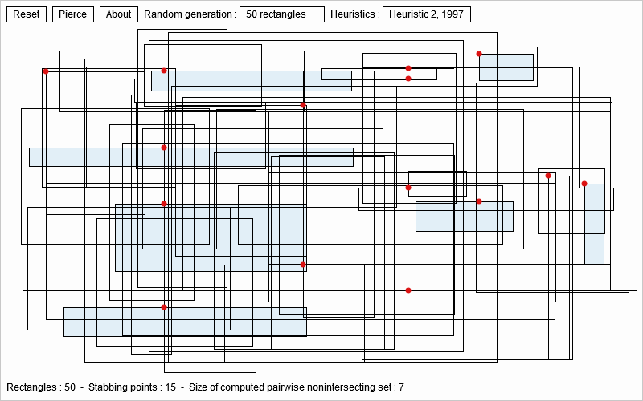

I am interested in geometric combinatorial optimization, specially geometric Set Cover Problems (SCPs) or
Hitting Set Problems (HSPs). Geometrically speaking, we want to pierce or stab a set of objects with the minimum number of points, or dually
cover a set of points by a minimum number copy of a geometric shape.

Caption: Piercing a set of axis-parallel rectangles with red points (Minimum Set Cover).
Getting an independent set of pairwise non-intersecting axis-parallel blue rectangles (Maximum Independent Set).
Dynamic geometric combinatorial optimization problems:
Those problems are NP-hard: For example, stabbing/piercing a set of isothetic boxes or finding maximum independent set of geometric graphs.
A recent breakthrough was obtained by Joseph S. B. Mitchell
here (2021).
I am interested in Helly, Gallai, and Hadwiger numbers as well.
Interactive demo:
Mouse left-click + drag to input rectangles. Then click on pierce button